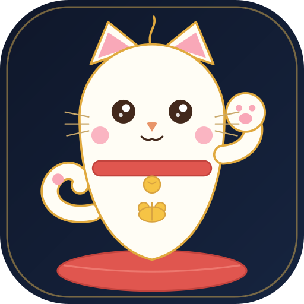

巴芒投资指引 人人可用的价值投资工具站这不是一个荐股号，而是一套人人能用的投资指引——把巴菲特与芒格的价值观，变成你可以照着做的步骤、可以亲手算的数字、可以自己筛的条件。
↑ 点击任意关键词，查看巴芒原话与解读
巴菲特的第一条规则是"不要亏钱"。所以"投多少"比"投什么"更靠前——先分层，只用真正闲得下来的钱去投资。
巴菲特的第一课是"先算好进账"。你家一年大约赚多少？
芒格说"记账是最诚实的理财"——支出决定了你能留下多少闲钱。
存款决定安全垫的厚度，年龄决定你能承受多少波动。
近 3 年有买房 / 买车 / 子女教育等大额支出计划吗？先留出来，别让它吃掉投资本金。
详细测算与提醒见右侧 → 可随时返回上一步调整。
调整参数，看看时间如何把雪球滚大；再看"晚开始 5 年/10 年"会让你少赚多少——这就是"延迟满足"的真实代价。
| 年份 | 年龄 | 当期投入 | 期末总资产 | 累计投入 | 复利收益 | 收益占比 |
|---|
同样的本金和定投，在不同年化收益率下的终值对比。9% 是乐观假设，3% 更接近存款/国债。
很多人投 10 年就停了，但让钱继续在里面滚——"投入期"结束后还有"滚存期"。试试看：
把巴芒式的"算账"做成随手可用的小工具。点击下方任意卡片，展开计算面板。
用理性的逆向思维，在能力圈内，以安全边际买入有护城河的好生意。左侧可滑动调节七维度筛选条件，右侧实时给出符合标准的备选池。
输入一只股票，模拟十年前买入并持有至今、分红再投资的最终回报。数据为演示值，重在体会"时间 + 持有"的力量。
投资的差距，99%是认知的差距。与其追逐市场消息，不如回到源头——读巴菲特自己说过的话，理解他做每个决定背后的逻辑。这里是系统的学习入口。
巴菲特最赚钱的几笔投资，都有一个共同点："当时看起来很贵，事后看却便宜得惊人"。拖动下方时间轴，回到他买入的那一年，看看当时的估值、ROE、利润增速——你会真正体会到，什么叫"用合理的价格买伟大的公司"。
点击左侧任意年份，查看该年致股东信的核心要点
以下是巴菲特与芒格本人推荐或亲笔撰写的经典书目、文章和纪录片。按"入门 → 进阶 → 深度"的顺序阅读，效果最佳。不必贪多，读完一本、真正理解一本，远胜过走马观花翻十本。
投资的差距，最后拼的是执行与纪律。这里的四个工具帮你：买前想清楚、持仓看护城河、交易先看情绪、犯错记下来。巴菲特也会公开认错——承认错误，是防止重复犯错的第一步。